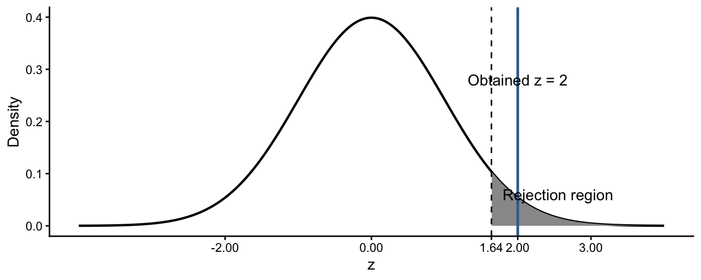

11 Hypothesis Testing
11.1 The Question
NoteCentral question
How can sample data be used to evaluate a claim about a population?
Suppose a police department claims that officers issue an average of four traffic citations per week. A random sample from a researcher produces an average of six. The difference could mean that the department’s claim is inaccurate, or it could have arisen through ordinary sampling variability.
Hypothesis testing provides a structured way to evaluate these possibilities. We begin by assuming a specific population value, determine how unusual the sample result would be under that assumption, and then decide whether the data provide sufficient evidence against the assumption.
11.2 What You Will Learn
After completing this chapter, you should be able to:
- State null and alternative hypotheses about a population mean.
- Distinguish right-tailed, left-tailed, and two-tailed tests.
- Explain the meaning of the significance level and p-value.
- Calculate a standard error and obtained z-statistic.
- Compare an obtained statistic with a critical value.
- Decide whether to reject or fail to reject a null hypothesis.
- Interpret a hypothesis-test result without overstating the evidence.
11.3 The Logic of Hypothesis Testing
A statistical hypothesis is a claim about a population parameter. Hypothesis testing compares two claims:
- The null hypothesis, \(H_0\), states the value assumed for the population parameter.
- The alternative hypothesis, \(H_A\), states the competing claim for which the researcher seeks evidence.
For the traffic-citation example:
\[ H_0:\mu=4 \]
\[ H_A:\mu>4 \]
The hypotheses concern the unknown population mean, \(\mu\), not the observed sample mean, \(\bar{x}\).
The test asks:
If the null hypothesis were true, how unusual would our sample result be?
If the sample result would be very unusual under \(H_0\), we reject the null hypothesis. If it would not be sufficiently unusual, we fail to reject it.
ImportantBegin by assuming the null hypothesis
A hypothesis test does not begin by assuming the researcher’s claim is true. It measures how compatible the observed sample is with the value stated by the null hypothesis.
11.4 Reject or Fail to Reject
A test produces one of two decisions:
- Reject \(H_0\): The sample provides sufficient evidence against the null hypothesis at the selected significance level.
- Fail to reject \(H_0\): The sample does not provide sufficient evidence against the null hypothesis.
Failing to reject is not the same as proving the null hypothesis true. The sample may simply be too small, too variable, or too close to the proposed value to provide strong evidence.
WarningDo not say that the null hypothesis was accepted or proved
“Fail to reject” means that the evidence was insufficient to reject the null hypothesis. It does not establish that the null hypothesis is correct.
11.5 Direction of the Alternative Hypothesis
The alternative hypothesis determines which part of the sampling distribution counts as evidence against \(H_0\).
| Alternative hypothesis | Type of test | Evidence lies in |
|---|---|---|
| \(H_A:\mu>\mu_0\) | Right-tailed | Right tail |
| \(H_A:\mu<\mu_0\) | Left-tailed | Left tail |
| \(H_A:\mu\ne\mu_0\) | Two-tailed | Both tails |
A directional claim must be selected before examining the result. Choosing a tail after seeing the sample would give the observed result an unfair advantage.
11.6 Significance Level and Critical Values
The significance level, symbolized by \(\alpha\), sets the threshold for deciding that a result is sufficiently unusual. This chapter uses:
\[ \alpha=0.05 \]
For a one-tailed test, the entire 0.05 rejection region is placed in one tail. For a two-tailed test, it is divided into 0.025 in each tail.
| Test at \(\alpha=0.05\) | Critical value or values | Reject \(H_0\) when |
|---|---|---|
| Right-tailed | \(z=1.64\) | \(z_{obt}>1.64\) |
| Left-tailed | \(z=-1.64\) | \(z_{obt}<-1.64\) |
| Two-tailed | \(z=\pm1.96\) | \(z_{obt}<-1.96\) or \(z_{obt}>1.96\) |
The area beyond the critical value is the rejection region.
11.7 Calculating the Test Statistic
To test a proposed population mean using the normal model:
\[ z=\frac{\bar{x}-\mu_0}{\widehat{SE}_{\bar{x}}} \]
where:
- \(\bar{x}\) is the sample mean;
- \(\mu_0\) is the value proposed by \(H_0\); and
- \(\widehat{SE}_{\bar{x}}=s/\sqrt{n}\).
The obtained z-statistic expresses the difference between the sample mean and proposed population mean in standard-error units.
This chapter uses the normal distribution to establish the logic of testing. Chapter 12 introduces the t-distribution, which is generally used for a population mean when the population standard deviation is unknown.
11.8 Worked Example: Traffic Citations
A department claims that officers issue an average of four citations per week. A researcher believes the population mean is greater than four. A random sample produces:
\[ n=16,\qquad \bar{x}=6,\qquad s=4 \]
11.8.1 Step 1: State the Hypotheses
\[ H_0:\mu=4 \]
\[ H_A:\mu>4 \]
This is a right-tailed test.
11.8.2 Step 2: Calculate the Standard Error
\[ \widehat{SE}_{\bar{x}}=\frac{4}{\sqrt{16}}=1 \]
11.8.3 Step 3: Calculate the Obtained Statistic
\[ z=\frac{6-4}{1}=2.00 \]
The sample mean is two standard errors above the value proposed by \(H_0\).
11.8.4 Step 4: Make the Decision
For a right-tailed test with \(\alpha=0.05\), the critical value is 1.64:
\[ 2.00>1.64 \]
We reject \(H_0\).
11.8.5 Step 5: Interpret the Result
At the 0.05 significance level, the sample provides evidence that the population mean number of citations issued per week is greater than four.
11.9 The p-Value
The p-value is the probability, assuming \(H_0\) is true, of obtaining a result at least as extreme as the one observed in the direction specified by \(H_A\).
For the right-tailed test with \(z=2.00\):
\[ p=P(Z\ge2.00)=0.0228 \]
Because \(p<0.05\), we reject \(H_0\). The p-value method and critical-value method reach the same decision.
WarningWhat a p-value is not
The p-value is not the probability that the null hypothesis is true. It is a probability calculated under the assumption that the null hypothesis is true.
11.10 One-Tailed and Two-Tailed Decisions
Suppose a department claims that the mean number of arrests per week is 80. A sample produces:
\[ n=64,\qquad \bar{x}=78.25,\qquad s=8 \]
The standard error and obtained statistic are:
\[ \widehat{SE}_{\bar{x}}=\frac{8}{\sqrt{64}}=1 \]
\[ z=\frac{78.25-80}{1}=-1.75 \]
11.10.1 Left-Tailed Claim
If the alternative is \(H_A:\mu<80\), the critical value is \(-1.64\). Because:
\[ -1.75<-1.64 \]
we reject \(H_0\). The one-tailed p-value is approximately 0.0401.
11.10.2 Two-Tailed Claim
If the alternative is \(H_A:\mu\ne80\), the critical values are \(\pm1.96\). Because:
\[ |-1.75|<1.96 \]
we fail to reject \(H_0\). The two-tailed p-value is approximately 0.0801.
The data are identical. The decision differs because the two hypotheses ask different questions and assign the rejection region differently.
11.11 Sample Size, Variability, and the Test Statistic
The obtained statistic depends on the difference from the null value and the standard error:
\[ z=\frac{\text{Observed difference}}{\text{Standard error}} \]
A larger sample generally reduces the standard error. Greater variability increases it. Therefore, identical differences from \(\mu_0\) can produce different test statistics.
For example, another sample has:
\[ n=100,\qquad \bar{x}=78.25,\qquad s=5 \]
Then:
\[ \widehat{SE}_{\bar{x}}=\frac{5}{\sqrt{100}}=0.50 \]
\[ z=\frac{78.25-80}{0.50}=-3.50 \]
This result falls beyond both \(-1.64\) and \(-1.96\), so it rejects \(H_0\) for either the left-tailed or two-tailed alternative.
ImportantStatistical significance is not practical importance
A small p-value indicates that the result is difficult to explain through sampling variability under \(H_0\). It does not tell us whether the difference is large, important, beneficial, or harmful in practice.
11.12 A Complete Testing Process
Use the following sequence:
- State \(H_0\) and \(H_A\) about the population parameter.
- Identify whether the test is right-tailed, left-tailed, or two-tailed.
- Select \(\alpha\) before examining the result.
- Calculate the standard error.
- Calculate the obtained test statistic.
- Find the p-value or compare with the appropriate critical value.
- Reject or fail to reject \(H_0\).
- Interpret the result in context.
- State an important limitation or what the result does not establish.
11.13 Check Your Understanding
The mean number of disciplinary infractions at Chaosington Penitentiary is claimed to be \(\mu_0=5\). A researcher believes the true mean is greater than five.
11.13.1 Sample 1
\[ n=36,\qquad \bar{x}=6,\qquad s=6 \]
11.13.2 Sample 2
\[ n=49,\qquad \bar{x}=6,\qquad s=14 \]
For each sample:
- State \(H_0\) and \(H_A\).
- Calculate the standard error and obtained z-statistic.
- Make a decision using \(\alpha=0.05\).
- Explain why the obtained statistics differ even though the means are equal.
NoteCheck your answers
For both samples, \(H_0:\mu=5\) and \(H_A:\mu>5\). This is a right-tailed test with a critical value of 1.64.
| Sample | Standard error | Obtained z | Decision |
|---|---|---|---|
| 1 | \(6/\sqrt{36}=1.00\) | \((6-5)/1=1.00\) | Fail to reject \(H_0\) |
| 2 | \(14/\sqrt{49}=2.00\) | \((6-5)/2=0.50\) | Fail to reject \(H_0\) |
Sample 2 is larger, but it is also much more variable. Its larger standard error makes the observed difference less unusual.
11.14 Test Your Knowledge: Filing Times
11.14.1 The Scenario
The Grand State Court of Procedural Efficiency claims that the population mean processing time for a routine filing is 96 minutes. Three attorneys make different claims.
11.14.2 Your Task
Complete a hypothesis test for each case using \(\alpha=0.05\).
11.14.2.1 Case 1: Longer Processing Times
The attorney claims \(\mu>96\). The sample has:
\[ n=81,\qquad \bar{x}=97,\qquad s=4.5 \]
11.14.2.2 Case 2: Shorter Processing Times
The attorney claims \(\mu<96\). The sample has:
\[ n=81,\qquad \bar{x}=95,\qquad s=9 \]
11.14.2.3 Case 3: A Different Processing Time
The attorney claims \(\mu\ne96\). The sample has:
\[ n=4,\qquad \bar{x}=30,\qquad s=40 \]
For each case:
- State \(H_0\) and \(H_A\).
- Identify the type of test and critical value.
- Calculate the standard error.
- Calculate the obtained statistic.
- Reject or fail to reject \(H_0\).
- Interpret the result in context.
- Identify any concern about the assumptions.
NoteReview the answers
| Case | Alternative | Test | Standard error | Obtained z | Decision |
|---|---|---|---|---|---|
| 1 | \(H_A:\mu>96\) | Right-tailed | \(4.5/\sqrt{81}=0.50\) | 2.00 | Reject \(H_0\) |
| 2 | \(H_A:\mu<96\) | Left-tailed | \(9/\sqrt{81}=1.00\) | -1.00 | Fail to reject \(H_0\) |
| 3 | \(H_A:\mu\ne96\) | Two-tailed | \(40/\sqrt{4}=20.00\) | -3.30 | Reject \(H_0\) using the normal critical value |
At \(\alpha=0.05\), Case 1 provides evidence that the population mean exceeds 96 minutes. Case 2 does not provide sufficient evidence that it is below 96 minutes. Under the normal-approximation procedure used here, Case 3 provides evidence that it differs from 96 minutes.
Case 3 has only four observations and an estimated population standard deviation. The normal approximation is questionable. The next chapter’s t-procedure is more appropriate and places greater weight on the uncertainty created by such a small sample.
11.15 Data Investigation: Decisions and Evidence
Using a quantitative variable from class data:
- Propose a population mean for comparison.
- Write a substantively meaningful alternative hypothesis.
- Identify the direction of the test.
- Calculate the sample mean, standard deviation, and standard error.
- Calculate the obtained test statistic.
- Make a decision using \(\alpha=0.05\).
- Interpret the result and distinguish statistical significance from practical importance.
- Explain whether the sampling process supports inference to a larger population.
11.16 Project Connection
- Identify one population claim related to your semester project.
- Express it as a null hypothesis.
- Write a meaningful alternative hypothesis.
- Identify whether the test would be one-tailed or two-tailed.
- Explain what evidence would justify rejecting \(H_0\).
- Identify a limitation that a small p-value would not resolve.
11.17 Looking Ahead
This chapter used the standard normal distribution to establish the logic of hypothesis testing. When the population standard deviation is unknown, as it usually is, we estimate it using the sample standard deviation. That additional uncertainty is especially important in small samples.
Chapter 12 introduces the **t*-distribution** and applies it to tests involving one mean and the difference between two sample means.
11.18 Chapter Summary
- Hypothesis testing evaluates a claim about a population using sample data.
- The null hypothesis states the value assumed for the population parameter.
- The alternative hypothesis specifies the competing claim.
- Right-, left-, and two-tailed tests place the rejection region in different locations.
- The significance level defines how unusual a result must be before \(H_0\) is rejected.
- The obtained statistic expresses the sample result’s distance from the null value in standard-error units.
- A p-value is calculated assuming the null hypothesis is true.
- Reject \(H_0\) when \(p\le\alpha\); otherwise, fail to reject it.
- Failing to reject does not prove or accept \(H_0\).
- Statistical significance does not establish practical importance or eliminate problems in study design.
11.19 Key Terms
- Alternative hypothesis (\(H_A\)): The population claim for which the researcher seeks evidence.
- Critical value: The boundary separating the rejection region from results that fail to reject \(H_0\).
- Hypothesis testing: A procedure for evaluating a population claim using sample data.
- Null hypothesis (\(H_0\)): The population claim assumed when calculating the test statistic and p-value.
- p-value: Assuming \(H_0\) is true, the probability of a result at least as extreme as the observed result.
- Rejection region: Values of the test statistic that lead to rejection of \(H_0\).
- Significance level (\(\alpha\)): The threshold used to decide whether a result is sufficiently unusual to reject \(H_0\).
- Statistical significance: A result that meets the selected criterion for rejecting \(H_0\).
- Test statistic: A standardized value comparing a sample result with the null hypothesis.
- Two-tailed test: A test with an alternative hypothesis using \(\ne\).
- One-tailed test: A test with an alternative hypothesis using \(<\) or \(>\).